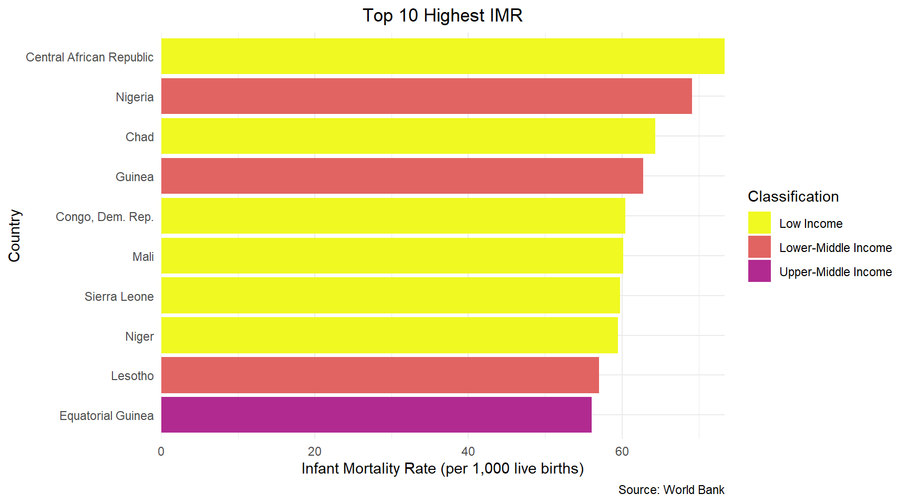
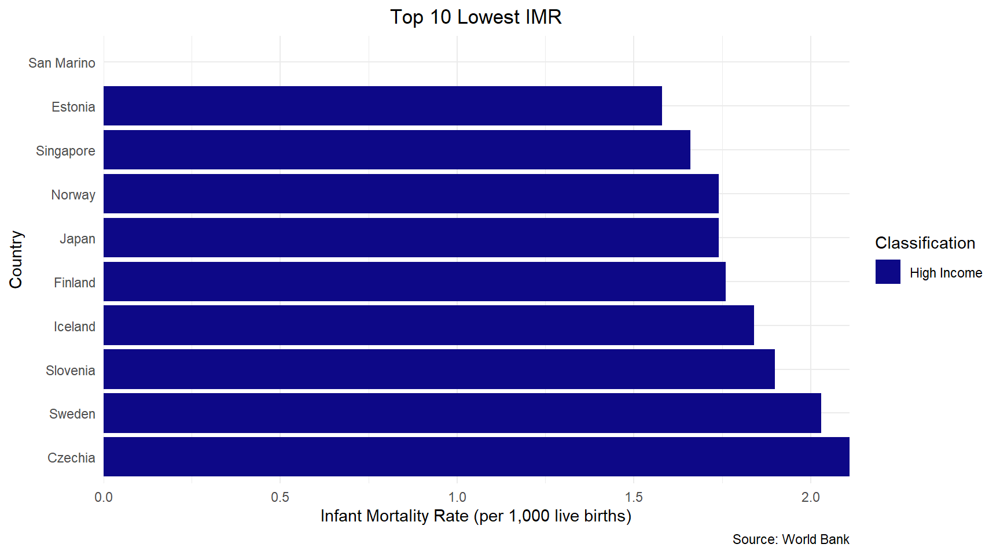
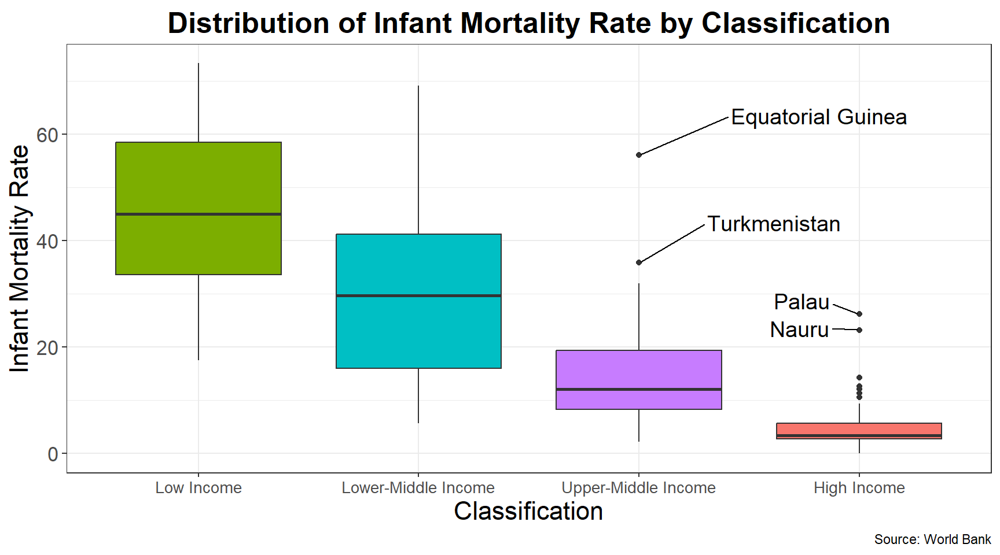
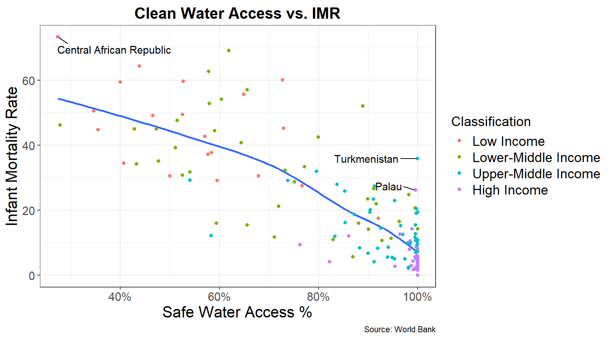
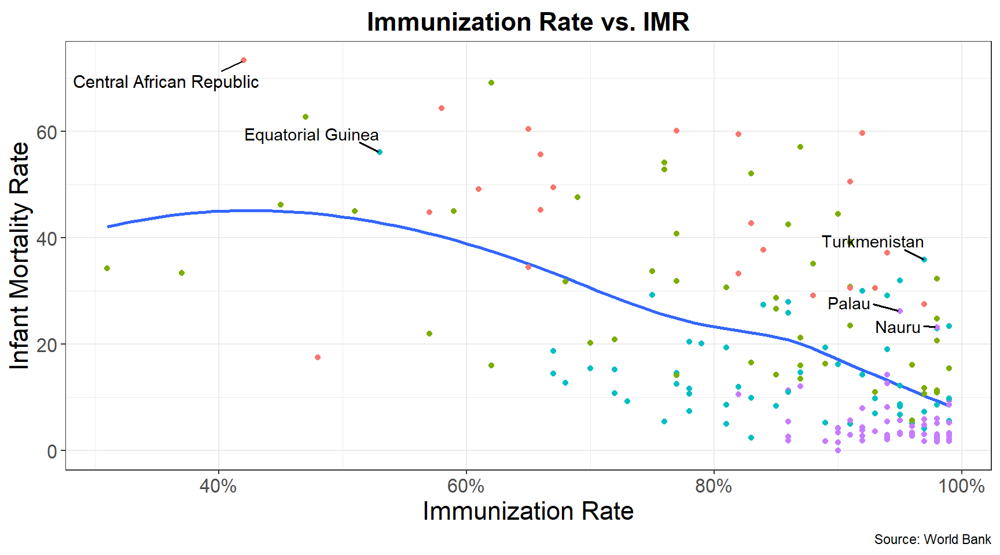

Code
library(readr)
library(tidyverse)
library(readxl)
library(skimr)
library(dplyr)
library(sf)
library(ggthemes)
library(ggtext)
library(ggrepel)
library(plotly)
library(knitr)DANL-310 Project Write-up
Nada Trabelsi
May 16, 2025
Infant mortality is the death of a child under 1 year old. The Infant mortality rate is calculated by taking the total number of infant deaths divided by the total number of live births, usually multiplied by 1,000. The infant mortality rate is measured in deaths per 1,000 live births, for example, a rate of 7 indicates that 7 infants die for every 1,000 live births. It is important to note that the infant mortality rate only accounts for infants who have already been birthed, it does not take stillbirths or miscarriages into account. Infant death can be caused by several different reasons and can be caused by accidents, lack of resources, and severe living conditions. Some of the most common causes include complications from preterm birth, birth defects, and infectious diseases such as respiratory infections, malaria, flu, pneumonia, and diarrheal diseases.
The infant mortality rate is an important health indicator as it is a marker for a country’s overall public health, development, and social equity. Compared to a century ago, the general trend for the worldwide infant mortality rate is a rapid decline as medicine and technology advanced. However, despite this rapid decline, there are still many countries and regions that suffer with high infant mortality rates. There is a large disparity between developed nations with the resources and wealth available to limit the amount of infant deaths compared to underdeveloped nations who struggle with resources and wealth inequality. Factors such as poor access to clean water, low immunization coverage, and limited economic development can have a major impact on a country’s ability to reduce infant mortality. This analysis aims to better understand how these different socioeconomic factors relate to infant mortality rates.
#main data set
global_health <- read_csv("global_health.csv")
#2nd data set
birth_rate_df <- read_excel("P_Data_Extract_From_World_Development_Indicators_all_years_for_kaggle.xlsx") |>
filter(Time == 2021) |>
mutate(Year = Time,
Country = Country_name) |>
select(Country, Year, Birth_rate)
global_health <- global_health |>
left_join(birth_rate_df) |>
mutate(Infant_Mortality_Rate = round((Infant_Deaths / (Birth_rate / 1000 * Total_Population)) * 1000, 2)) |>
filter(Year == 2021)Two data sets were used for analysis, both found from Kaggle by separate posters. The main data set, “Global Health and Development (2012-2021)”, was produced by Martina Galasso by combining reliable data from the World Bank and the World Health Organization (WHO) to showcase a comprehensive overview of of global health, demographics, economic, and environmental metrics for 188 countries between 2012 and 2021. This data set included the total number of infant deaths in a year but did not include the infant mortality rate. This led me to search for another data set that provided an indicator that would allow me to calculate the infant mortality rate. The second data set, “World Bank World Development Indicators”, curated by Nicolás Ariel González Muñoz contained world development indicators from 1960 to 2022. This data set contained the birth rate, which allowed me to reverse the equations and find the infant mortality rate for every available country in the latest available year in the first data set.
Country : The recognized nation being observedCountry_Code: Unique three letter country identifierYear: The year data is relevant toTotal_Population: Total number of people living in the country during that specific yearInfant_Deaths: Total number of infants who died within the specified yearGDP_Per_Capita: The total value of a country’s economic output per personImmunization_Rate: The percentage of the population who received vaccinations to protect against certain diseasesSafe_Water_Access: The percentage of the population who have access to clean and safe waterBirth_Rate: Number of people born per year for every 1,000 individualsInfant_Mortality_Rate: Number of infant deaths under 1 year of age per year for every 1,000 live birthsI made sure to filter the year to find the latest data available, 2021. As mentioned earlier, I needed to extract the birth rate from the second data set in order to find the infant mortality rate. After filtering for the Birth_Rate, I joined the two data sets and used mutate() to create a new variable Infant_Mortality_Rate and calculate the infant mortality rate. The infant mortality rate is calculated by dividing total infant deaths with total live births and multiplying by 1,000. To find the total number of live births, the Birth_Rate was divided by 1,000 and multiplied by the Total_Population. The infant mortality rate was then found by dividing the total live births with the Infant_Deaths and multiplying by 1,000. The rate was rounded to two decimal points to keep the data set from looking cluttered.
A shape file map was also used to generate a map visualizing the infant mortality rates across the globe. However there were a few discrepancies with the countries often due to spelling error and use of a countries official name. Therefore, anti_join() was used in order to find the missing Country_Code in each data set. It was easier to find the discrepancies between the datasets and rewrite the Country_Code in the map data frame in order to properly join the two data frames.
A new variable, h_text, was created to show the country followed by the IMR, to make it easier to code for the interactive plotly map later on.
world_map <- read_sf("C:/Users/15857/Downloads/DANL-310/ne_110m_admin_0_countries/ne_110m_admin_0_countries.shp") |>
rename("Country_Code" = "SOV_A3") |>
filter(Country_Code != "ATA")
new_map <- unique(world_map$Country_Code)
new_map <-data.frame(Country_Code = new_map)
og_data <- unique(global_health$Country_Code)
og_data <-data.frame(Country_Code = og_data)
missing <- anti_join(og_data, new_map)
missing2<- anti_join(new_map, og_data)
world_map <- world_map |>
mutate(Country_Code = recode(Country_Code,
"US1" = "USA",
"KA1" = "KAZ",
"FR1" = "FRA",
"CU1" = "CUB",
"DN1" = "DNK",
"NL1" = "NLD",
"CH1" = "CHN",
"IS1" = "ISR",
"CYN" = "CYP",
"GB1" = "GBR",
"AU1" = "AUS",
"NZ1" = "NZL",
"FI1" = "FIN",
"SDS" = "SSD"))
imr_map_data <- world_map |>
left_join(global_health, by = "Country_Code") |>
mutate(h_text = paste0(Country, "\nIMR:", Infant_Mortality_Rate))A new data frame was created in order to split the countries based on their income classification. GDP_Per_Capita was used to split the countries based on the World Bank’s country classifications in 2021. The threshold stated Lower income countries were less than 1,045, lower-middle income countries were between 1,046 and 4,095, upper-middle income countries were between 4,096 and 12,695, and high income countries were above 12,695. There was very little missing data, so they were dropped.
gh_with_classification <- global_health |>
mutate(Classification = case_when(
GDP_Per_Capita <= 1045 ~ "Low Income",
GDP_Per_Capita > 1045 & GDP_Per_Capita <= 4095 ~ "Lower-Middle Income",
GDP_Per_Capita > 4095 & GDP_Per_Capita <= 12695 ~ "Upper-Middle Income",
GDP_Per_Capita > 12695 ~ "High Income"
)) |>
filter(!is.na(Classification))sum_stats <- gh_with_classification |>
mutate(Classification = factor(Classification,
levels = c("High Income", "Upper-Middle Income", "Lower-Middle Income", "Low Income"))) |>
group_by(Classification) |>
summarize(
mean = round(mean(Infant_Mortality_Rate, na.rm = TRUE),2),
min = min(Infant_Mortality_Rate, na.rm = TRUE),
q1 = round(quantile(Infant_Mortality_Rate, probs = 0.25, na.rm = TRUE),2),
median = round(median(Infant_Mortality_Rate, na.rm = TRUE), 2),
q3 = round(quantile(Infant_Mortality_Rate, probs = 0.75, na.rm = TRUE),2),
max = max(Infant_Mortality_Rate, na.rm = TRUE),
count = n()
) |>
as.data.frame()
kable(sum_stats)| Classification | mean | min | q1 | median | q3 | max | count |
|---|---|---|---|---|---|---|---|
| High Income | 5.23 | 0.00 | 2.70 | 3.37 | 5.65 | 26.21 | 59 |
| Upper-Middle Income | 14.91 | 2.13 | 8.30 | 12.08 | 19.32 | 56.07 | 54 |
| Lower-Middle Income | 30.00 | 5.69 | 16.05 | 29.69 | 41.19 | 69.15 | 48 |
| Low Income | 45.15 | 17.53 | 33.60 | 45.02 | 58.54 | 73.35 | 22 |
As shown in the table above, a large majority of countries have a relatively lower infant mortality rate below 20. As income levels increase, the infant mortality rate drastically decreases. This is due to wealthier nations having the resources to provide life-saving healthcare and infrastructures to it’s population compared to lower income nations.
It appears the regions with the highest infant mortality rates are West and Central Africa, as well as parts of South Asia. If we select to show only high income countries, it appears the country that has the highest rate is Oman, however, it still only has a relatively low rate of 9.32 deaths per 1,000 live births. This highlights the great disparity between high income and lower income countries. This also shows on the map with the range between the countries. Low income countries have a high range with the lowest rate being around 17 while the highest rate is above 70. However, high income countries have a much shorter range of 9 deaths between the countries with the lowest and highest rate.
top_10_1 <- gh_with_classification |>
arrange(-Infant_Mortality_Rate) |>
head(10)
top_10_2 <- gh_with_classification |>
arrange(Infant_Mortality_Rate) |>
head(10)
colors <- c("Low Income" = "#f0f921ff",
"Lower-Middle Income" = "#e16462ff",
"Upper-Middle Income" = "#b12a90ff")
ggplot(top_10_1,
aes(x = Infant_Mortality_Rate,
y = reorder(Country, Infant_Mortality_Rate))) +
geom_bar(stat = "identity",
aes(fill = Classification)) +
labs(title = "Top 10 Highest IMR",
x = "Infant Mortality Rate (per 1,000 live births)",
y = "Country",
caption = "Source: World Bank") +
theme_minimal()+
theme(
legend.position = "right",
plot.title = element_text(hjust = 0.5)
) +
scale_fill_manual(values = colors) +
scale_x_continuous(expand = c(0, 0)) 
The country with the highest rate is the Central African Republic with an infant mortality rate above 70, followed by Nigeria and Chad who both have rates above 60. All the countries in the top 10 highest infant mortality rates are African and this can be explained by many factors that causes Africa to remain underdeveloped compared to other countries around the world. A major cause of this is from external factors like colonialism and the slave trade, which severely exploited many African nations and disrupted their social and economic systems. These disruptions had heavy impacts on African underdevelopment and directly contributed to the current socioeconomic environment that is causing high infant mortality rates.
It is also important to note that despite being an upper-middle income country, Equatorial Guinea still faces challenges with a high infant mortality rate. A higher income level with a high infant mortality could indicate an extreme wealth disparity and social inequality as a majority of the country could be living well below their needs while a very small portion of the population hoards an excessive amount of wealth. This is important because it shows how wealth and economic development is not the sole factor that contributes to a nation’s infant mortality rate, despite having a large impact.
ggplot(top_10_2,
aes(x = Infant_Mortality_Rate,
y = reorder(Country, -Infant_Mortality_Rate))) +
geom_bar(stat = "identity",
aes(fill = Classification)) +
labs(title = "Top 10 Lowest IMR",
x = "Infant Mortality Rate (per 1,000 live births)",
y = "Country",
caption = "Source: World Bank") +
theme_minimal()+
theme(
legend.position = "right",
plot.title = element_text(hjust = 0.5)
) +
scale_fill_viridis_d(option = "plasma") +
scale_x_continuous(expand = c(0, 0)) 
The country with the lowest infant mortality rate at 0 deaths is San Marino. According to the World Bank, San Marino had 0 infant deaths from 2016 and 2021. San Marino is a microstate completely surrounded by Italy with a very small population of about 30,000 people. Possibly due to it’s lower population and high focus on healthcare. The range between is rather low, ranging from 0 to about 2.5. This demonstrates the high impact of economic development has on the ability of a nation to reduce their infant mortality rate. ## Distribution of Infant Mortality Rate by Classification
ggplot(gh_with_classification,
mapping= aes(x = fct_reorder(Classification, -Infant_Mortality_Rate, na.rm = T),
y = Infant_Mortality_Rate,
fill = Classification)) +
geom_boxplot() +
labs(title = "Distribution of Infant Mortality Rate by Classification",
caption = "Source: World Bank")+
xlab("Classification")+
ylab("Infant Mortality Rate") +
theme_bw()+
theme(
legend.position = 'none',
plot.title = element_text(hjust = .5,
vjust = .5,
face = 'bold',
size = rel(1.7)),
axis.title.x = element_text(size = rel(1.5)),
axis.title.y = element_text(size = rel(1.5)),
axis.text.x = element_text(size = rel(1.2)),
axis.text.y = element_text(size = rel(1.5))) +
geom_text_repel(data = filter(gh_with_classification, Country %in% c("Palau", "Nauru")),
aes(label = Country),
vjust = 0, hjust = 1.5, size = 5, force = 5) +
geom_text_repel(data = filter(gh_with_classification, Country %in% c("Equatorial Guinea", "Turkmenistan")),
aes(label = Country),
vjust = -2, hjust = -.5, size = 5)
The boxplot shows just how drastically income and economic development affects the child mortality rate. There is a generally large range of infant mortality rates in low and lower-middle income nations. But as a nation’s wealth and economic development increases, the infant mortality rate decreases significantly as well as the range between the nation’s infant mortality rates.
The boxplot also highlights the oddity of upper-middle and high income nations who persist in having high infant mortality rates. Equatorial Guinea has a significantly high infant mortality rate, even comparing it to nations that are lower-middle class. Turkmenistan, Palau, and Nauru are other countries that have higher income but still maintain a high infant mortality rate.
gh3 <- gh_with_classification |>
mutate(Classification = factor(Classification, levels = c(
"Low Income", "Lower-Middle Income", "Upper-Middle Income", "High Income"
)))
ggplot(gh3,
mapping = aes(x = Safe_Water_Access_Percent,
y = Infant_Mortality_Rate)) +
geom_smooth(method = "loess", se = F, linewidth = 1) +
geom_point(aes(color = Classification)) +
labs(title = "Clean Water Access vs. IMR",
caption = "Source: World Bank")+
xlab("Safe Water Access %")+
ylab("Infant Mortality Rate") +
scale_x_continuous(labels = scales::percent_format(scale = 1))+
theme_bw()+
theme(
plot.title = element_text(hjust = .5,
vjust = .5,
face = 'bold',
size = rel(1.5)),
axis.title.x = element_text(size = rel(1.5)),
axis.title.y = element_text(size = rel(1.5)),
axis.text.x = element_text(size = rel(1.4)),
axis.text.y = element_text(size = rel(1.4)),
legend.text = element_text(size = rel(1.3)),
legend.title = element_text(size = rel(1.3))) +
geom_text_repel(data = filter(gh_with_classification, Country %in% c("Palau", "Nauru")),
aes(label = Country),
vjust = 0, hjust = 1.5, size = 4, force = 5) +
geom_text_repel(data = filter(gh_with_classification, Country %in% c("Equatorial Guinea", "Turkmenistan")),
aes(label = Country), size = 4, min.segment.length = 0, hjust = 1.3) +
geom_text_repel(data = filter(gh_with_classification, Country %in% c("Central African Republic")),
aes(label = Country),
vjust = 2, hjust = 0, size = 4, force = 5)
There is a clear negative relationship between access to safe water and infant mortality rate, as access to safe water increases, the infant mortality rate gradually decreases. However, countries with lower safe water access tend to be very scattered compared to countries with higher access to safe water. A large majority of the world’s nations have greater access to safe water; so for nations with a high safe water access percent and a high infant mortality rate, access to clean water is not a factor that would truly affect the infant mortality rate.
However, we see that the Central African Republic, the country with the highest infant mortality rate, has a severely low access to water (below 30%). This could be a major reason for the high infant mortality rate. As lack of access to safe water could cause water-born diseases to spread rapidly. Lack of safe water also leads to unhygienic living conditions, allowing disease to escalate and spread quicker. Lack of safe drinking water can also lead to dehydration for the mothers, reducing the infant’s milk supply and potentially leading to dehydration for the infant as well.
ggplot(gh3,
mapping = aes(x = Immunization_Rate,
y = Infant_Mortality_Rate)) +
geom_smooth(method = "loess", se = F, linewidth = 1) +
geom_point(aes(color = Classification)) +
labs(title = "Immunization Rate vs. IMR",
caption = "Source: World Bank")+
xlab("Immunization Rate")+
ylab("Infant Mortality Rate") +
scale_x_continuous(labels = scales::percent_format(scale = 1))+
theme_bw()+
theme(
legend.position = "none",
plot.title = element_text(hjust = .5,
vjust = .5,
face = 'bold',
size = rel(1.5)),
axis.title.x = element_text(size = rel(1.5)),
axis.title.y = element_text(size = rel(1.5)),
axis.text.x = element_text(size = rel(1.4)),
axis.text.y = element_text(size = rel(1.4))) +
geom_text_repel(data = filter(gh3, Country %in% c("Palau", "Nauru")),
aes(label = Country),
vjust = 0, hjust = 1.5, force = 5, min.segment.length = 0, segment.size = .7) +
geom_text_repel(data = filter(gh3, Country %in% c("Equatorial Guinea", "Turkmenistan")),
aes(label = Country), force = 5, min.segment.length = 0, segment.size = .7, hjust = 1, vjust = -1) +
geom_text_repel(data = filter(gh_with_classification, Country %in% c("Central African Republic")),
aes(label = Country),
vjust = 2, hjust = 2, size = 4, force = 5)
There is also a negative relationship between immunization rates and infant mortality rates, though not as steep as the relationship with access to safe water. As the percentage of people receiving immunizations increases, the infant mortality rate tends to decrease. This suggests that immunization plays a significant role in reducing preventable diseases that often contribute to infant deaths. However, there is a greater spread and variation in the infant mortality rates compared to immunization rates. There are many countries with high immunization rates who continue having a high infant mortality rate. This inconsistency indicates that immunization is a key, but not the sole driver of infant mortality.
Although Equatorial Guinea had missing data regarding safe water access, it had data regarding their immunization rates. Equatorial Guinea has a relatively low immunization rate at little over 50%. This could indicate that preventable disease could be a major factor regarding infant death. The Central African Republic also has a lower immunization rate indicating the combined circumstances of lacking safe water and low immunization could be a major reason why their infant mortality rate is so high. In regions where healthcare systems are already limited, the lack of immunization increases the risk of outbreaks of preventable disease, decreasing the infants chance at survival.
The insights from this project can help inform public policy decisions and guide the work of Nongovernmental organizations (NGOs) and global organizations trying to lower infant mortality rates around the world. One of the clearest takeaways is that economic development is a key factor in lowering infant mortality rates as countries with more wealth and resources tend to have lower infant mortality rates. However, this analysis shows that money alone isn’t enough. Some countries with relatively high incomes, like Equatorial Guinea, still have high infant death rates, which means that how money is used and socioeconomic equality within a nation is more important than exactly how much wealth a nation has.
This information can help inform public policy as governments, especially in lower income countries, could use this kind of data to help them decide where to invest, like expanding access to healthcare, improving water systems, or increasing vaccination coverage. For NGOs and global agencies, like the World Health Organization and the World Bank, the data can be utilized to focus their efforts on areas of need and specify what factors could be affecting the infant mortality rate the greatest. For example, instead of just looking at income levels, they can look at specific issues, like which countries are struggling with immunization or clean water access and focus their efforts there. This way, limited resources can be used where they’ll have the biggest impact.
For instance, Equatorial Guinea stood out throughout the project because although it had a higher income level than other nations, it was still in the top 10 countries with the highest infant mortality rate. The government, an NGO, or a global agency could narrow the possible factors causing the infant mortality to be so high by comparing infant mortality rate to various different socioeconomic factors to narrow the focus on factors that are most likely impacting the infant mortality rate. In this case, we found that Equatorial Guinea had a relatively low immunization rate, so one of these organizations could focus resources and actions to increase immunization efforts to help lower infant death caused by outbreaks and spread of preventable diseases such as measles.
Another example would be the Central African Republic, which had the world’s highest infant mortality rates, above 70%. We found they had low access to safe water and a low immunization rate, and these combined factors could lead to a disastrous living situation that explains the high infant mortality rate. Not having access to safe water increases risks for malnutrition and dehydration, as well as increasing the unhygienic living circumstance, and spreading water-born diseases. Lower immunization rates means the risks of outbreaks and spreading diseases are much higher, combined with a lack of safe water the diseases are likely to spread faster and rampantly as people are unable to sanitize themselves or hydrate during sickness. Global health agencies can focus on providing greater vaccination coverage to individuals. And NGO’s can focus resources on providing safe drinking wells and technology to provide greater access to safe water in areas of the Central African Republic. The combined efforts could help minimize the infant mortality rate.
This analysis confirms the importance of socioeconomic development for lowering infant mortality rates worldwide. Countries with higher income tend to show much lower infant mortality rates compared to nations with lower income, indicating how wealth and economic resources can contribute to lowering infant mortality rate as this wealth can go into greater healthcare systems, infrastructures, and access to other living essentials. However, a country’s economic development is not the sole factor in determining a low infant mortality rate. There are many different socioeconomic factors that can affect the infant mortality rate such as the access to safe water and immunization rate.
This project is limited as the focus was only economic development through the income classification, immunization rate, and safe water access percent. There are many other factors like the mothers education, quality of healthcare system, and political stability that can also highly affect the infant mortality rate. Missing data from several countries could also decrease the accuracy of the project. I would recommend looking over many more socioeconomic variables that could affect the infant mortality rate and provide a greater understanding.
Armenakyan, N. (n.d.). Child mortality and causes of death. World Health Organization. https://www.who.int/data/gho/data/themes/topics/topic-details/GHO/child-mortality-and-causes-of-death
Galasso, M. (2024, November 30). Global Health and Development (2012-2021). Kaggle. https://www.kaggle.com/datasets/martinagalasso/global-health-and-development-2012-2021
González Muñoz, N. A. (2024, April 9). World Bank World Development Indicators. Kaggle. https://www.kaggle.com/datasets/nicolasgonzalezmunoz/world-bank-world-development-indicators
Hamadeh, N., Van Rompaey, C., & Metreau, E. (2021, July 1). New World Bank country classifications by Income Level: 2021-2022. World Bank Blogs. https://blogs.worldbank.org/en/opendata/new-world-bank-country-classifications-income-level-2021-2022
Niyonzima, E. (2024, February 16). Critical Analysis of Causes of African Underdevelopment in History Perspectives. Sci Set J of Economics Res. https://www.researchgate.net/publication/378260493_Critical_Analysis_of_Causes_of_African_Underdevelopment_in_History_Perspectives
“Number of Infant Deaths - San Marino.” World Bank Open Data, data.worldbank.org/indicator/SH.DTH.IMRT?locations=SM. Accessed 18 May 2025.
Generative AI tool, ChatGPT, was used to generate the Shiny app code, the code that allowed scrolling on the dashboard, and the kable() code for the summary statistics dataframe.